8. Principio de invarianza y construcción de funciones de Lyapunov
Semana 9
La parte 7 dejó dos preguntas abiertas. La primera: si \(\dot V\le0\) y \(\dot V\) se anula en algo más que el origen (la energía del péndulo con fricción), ¿qué se puede concluir? La respuesta es el principio de invarianza de LaSalle: las soluciones que viven en un compacto positivamente invariante tienden al mayor conjunto invariante contenido en \(\{\dot V=0\}\). La segunda: ¿de dónde sale una \(V\) cuando no hay energía evidente, o cuando la energía se queda corta? Tres respuestas: el gradiente variable (se adivina \(\nabla V\)), el método de Krasovskii (\(V=f^\top Pf\)) y la ecuación de Zubov, que da la región de atracción exacta.
Al terminar esta parte usted podrá
- Distinguir conjuntos invariantes de positivamente invariantes, construir un conjunto compacto y positivamente invariante con una componente de un conjunto de nivel, y usar las propiedades del conjunto \(\omega\)-límite.
- Enunciar y probar el principio de invarianza de LaSalle, calcular \(E\) y su mayor subconjunto invariante \(M\) con la prueba de permanencia, y concluir exactamente lo que el teorema permite (y no más).
- Reconocer qué puede ser \(M\) (un punto, un ciclo límite, una recta de equilibrios, un subespacio no observable) y por qué la convergencia a \(M\) no da por sí sola convergencia a un punto ni estabilidad.
- Estimar la región de atracción con conjuntos de nivel cuando \(\dot V\) es solo semidefinida.
- Construir funciones de Lyapunov con el gradiente variable y con el método de Krasovskii, y caracterizar la región de atracción exacta con la ecuación de Zubov.
Ruta de las clases
| Semana | Qué se ve | Capítulo | Scripts |
|---|---|---|---|
| 9 (primera sesión) | El hueco de \(\dot V\le0\); conjuntos invariantes y \(\omega\)-límite; el teorema de LaSalle, su prueba y los corolarios de Barbashin y Krasovskii; el péndulo, por fin | §8.1–8.3 | C8_Ej1, C8_Ej2 |
| 9 (segunda sesión) | Qué puede ser \(M\); estimar la región de atracción con \(\dot V\le0\); gradiente variable, Krasovskii y Zubov | §8.4–8.8 | C8_Ej3–C8_Ej15, crearModelo_AdaptativoLaSalle |
Lo esencial, en una página
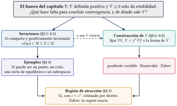
El principio de invarianza
Teorema de LaSalle (Khalil, Teorema 4.4)
Sea \(\Omega\) compacto y positivamente invariante y \(V\) de clase \(\mathcal C^1\) con \(\dot V\le0\) en \(\Omega\). Sea \(E=\{x\in\Omega:\dot V(x)=0\}\) y \(M\) el mayor conjunto invariante contenido en \(E\). Entonces toda solución que comienza en \(\Omega\) tiende a \(M\). La prueba es la cadena \(\omega(x_0)\subset M\subset E\subset\Omega\). \(V\) no tiene que ser definida positiva.
La prueba de permanencia
Si \(E=\{h(x)=0\}\) y una solución se queda en \(E\), entonces \(h\), \(L_fh\), \(L_f^2h,\dots\) se anulan a lo largo de ella. En el péndulo: \(x_2\equiv0\Rightarrow\sin x_1\equiv0\Rightarrow x_1\equiv0\), y \(M=\{0\}\). En sistemas lineales es literalmente la prueba de observabilidad: \(M=\ker\mathcal O\).
Trampa: “\(\dot V=0\) en el eje, luego la solución termina en el eje”
Termina en \(M\), no en \(E\): la solución del péndulo desde \((2,0.8)\) cruza el eje \(x_2=0\) doce veces en \([0,40]\), y en cada cruce \(V\) sigue bajando. Pasar por \(E\) no es quedarse en \(E\).
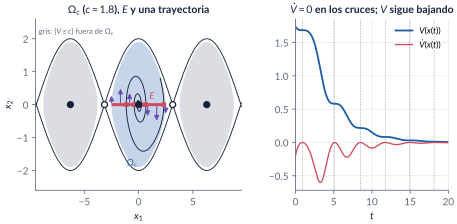
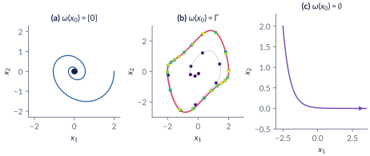
Qué puede ser \(M\)
Trampa: “\(V(x_0)<c\), luego \(x_0\) está en \(\Omega_c\)”
En el resorte blando, \((1.2,0)\) tiene \(V=0.2016<c^*=0.25\) y escapa en \(t=2.40\): está en otra componente de \(\{V\le c\}\). El estimado es la componente conexa que contiene al origen.
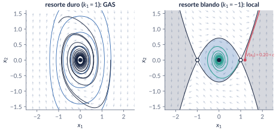
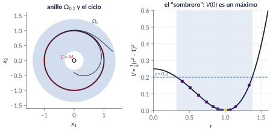
Trampa: “\(x(t)\to M\), luego converge al punto que usé en \(V\)”
En el control adaptativo, \(M\) es una recta de equilibrios y \(k_\infty=a+\sqrt{(k_0-a)^2+\gamma y_0^2}\) depende de la condición inicial (\(3.83\) desde \((2,-1)\)), no de la constante \(b\) del análisis.
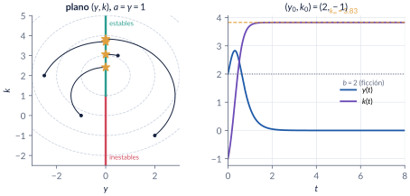
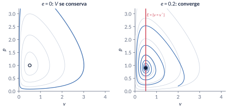
Trampa: “todas convergen, luego es asintóticamente estable”
Con \(\dot r=r(1-r)\), \(\dot\theta=1-\cos\theta\), todas las soluciones del anillo van a \((1,0)\), que es inestable: desde distancia \(0.15\) la solución se aleja hasta \(2\). LaSalle da convergencia, no estabilidad.
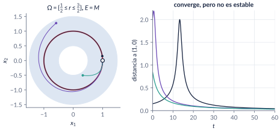
Estimar la región de atracción con \(\dot V\le0\)
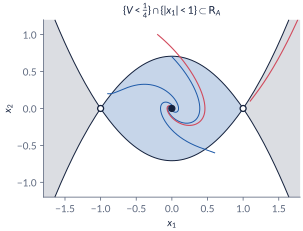
Construir \(V\)
| Método | Qué se fija | Qué se obtiene |
|---|---|---|
| Gradiente variable | la forma de \(\nabla V\) | \(V\) y un estimado de \(\mathcal R_A\), con parámetros libres para mejorarlo |
| Krasovskii | \(V=f^\top Pf\) | una condición sobre la jacobiana; estabilidad global si vale en \(\mathbb R^n\) |
| Zubov | la forma de \(\dot V\) (una EDP) | la región de atracción exacta |
Trampa: “la elección limpia es la mejor”
En \(\dot x_1=x_2\), \(\dot x_2=-(x_1+x_2)-\sin(x_1+x_2)\), la elección \(a_{11}=2\) anula el término cruzado y da un estimado de área \(\pi^3=31.0\). El mayor estimado está en \(a_{11}\approx1.48\), con área \(37.4\).
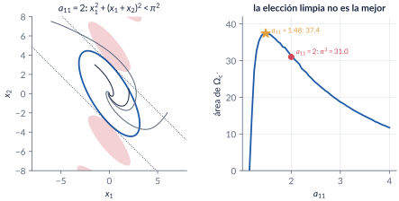
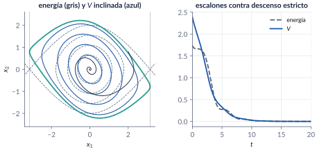
Krasovskii
Si \(J(x)^\top P+PJ(x)\le-R\) en un dominio convexo \(D\), el origen es el único equilibrio en \(D\), es asintóticamente estable con \(V=f^\top Pf\) y, si \(D=\mathbb R^n\), globalmente asintóticamente estable.
Trampa: “\(\|f\|^2\) pequeña, luego el estado está cerca del origen”
\(V=\|f\|^2\) se anula en todos los equilibrios: en \(\dot x_1=-x_1+x_1^3\), \(\dot x_2=-x_2\), el punto \((1.05,0)\) tiene \(V=0.0116\) y escapa.
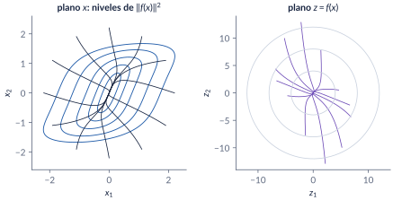
Zubov
Si \(\dfrac{\partial V}{\partial x}f=-h(x)(1-V)\) en un abierto \(D\), con \(0<V<1\) en \(D\setminus\{0\}\) y \(V\to1\) en \(\partial D\) y en el infinito, entonces \(D\) es la región de atracción. Con \(W=-\ln(1-V)\): \(\dot W=-h\), y \(W(x_0)=\int_0^\infty h(\phi_t(x_0))\,dt\).
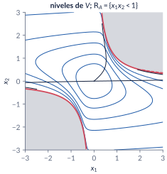

Explorador interactivo
Tres pestañas. Todo se calcula en su navegador (Runge–Kutta de paso fijo), con los mismos modelos de C8_Ej1–C8_Ej15.
Retos con el explorador
- LaSalle: en el péndulo, lance soluciones que crucen \(E\) varias veces. ¿Se detiene \(V\) en algún cruce? Suba \(c\) por encima de \(2\): ¿qué le pasa a \(\Omega_c\)?
- LaSalle: en el resorte blando, haga clic en una zona gris. ¿Qué hace la solución? ¿Y en la zona azul?
- LaSalle: en el ciclo límite, ¿hay algún equilibrio en \(E\)? ¿A dónde van las soluciones?
- LaSalle: en el atractivo inestable, arranque muy cerca de \((1,0)\) por encima del eje y por debajo. ¿Cuál se aleja?
- Gradiente variable: mueva \(a_{11}\) y encuentre el mayor estimado. ¿Qué pasa con \(a_{11}=1.1\)?
- Gradiente variable: lance soluciones desde fuera del estimado. ¿Convergen? ¿Qué dice eso del estimado?
- Zubov: suba \(c\) hasta \(0.999\). ¿Hasta dónde llega el nivel? Haga clic justo a ambos lados de la hipérbola.
Códigos de esta parte
Los bloques salen directamente de los archivos del repositorio. Ejecute antes iniciarCurso. verificarCap08 comprueba los números del capítulo (39/39). Ningún script necesita toolboxes. Una función nueva en comun/: nivelCritico (el mayor nivel certificable, \(c^*\), en una malla), y una en la carpeta del capítulo: zubovMalla (la función de Zubov por el método de las características).
Tres conjuntos límite (§8.2).
fa = @(t, x) [x(2); -x(1) - 0.4*x(2)]; % (a) oscilador amortiguado
fv = @(t, x) [x(2); -x(1) + (1 - x(1)^2)*x(2)]; % (b) van der Pol, mu = 1
fc = @(t, x) [0.5; -x(2)]; % (c) sin acotación
[~, Xa] = ode45(fa, [0 30], [2; 0], opc);
[tv, Xv] = ode45(fv, [0 80], [0.1; 0], opc);
[~, Xn] = ode45(fv, 0:60, [0.1; 0], opc); % muestras phi_n(x0)
[~, Xc] = ode45(fc, [0 12], [-2.5; 2], opc);
fprintf('(a) x(30) = (%.1e, %.1e): omega = {0}\n', Xa(end, :));
fprintf('(b) amplitud en t in [60, 80]: max x1 = %.3f, min x1 = %.3f\n', max(Xv(tv > 60, 1)), min(Xv(tv > 60, 1)));
fprintf('(c) x1(12) = %.1f -> infinito: omega vacío\n', Xc(end, 1));El péndulo con fricción, por fin (§8.3).
a = 1; b = 0.3; c = 1.8;
f = @(t, x) [x(2); -a*sin(x(1)) - b*x(2)];
V = @(x1, x2) a*(1 - cos(x1)) + x2.^2/2;
xE = acos(1 - c/a); % E = {(x1, 0) : |x1| <= xE}
fprintf('E = {x2 = 0, |x1| <= %.3f}\n', xE);
x0 = [2; 0.8];
g = @(t, z) [f(t, z(1:2)); z(2)^2]; % z(3) = int x2^2
[t, Z] = ode45(g, linspace(0, 40, 40001), [x0; 0], opc);
cruces = sum(diff(sign(Z(:, 2))) ~= 0);
balance = b*Z(end, 3) - (V(x0(1), x0(2)) - V(Z(end, 1), Z(end, 2)));
fprintf('V(x0) = %.3f, cruces con E en [0, 40]: %d, error del balance = %.1e\n', V(x0(1), x0(2)), cruces, balance);La prueba de permanencia (§8.3).
% Sobre E (x2 = 0) se exige h = x2, L_f h y L_f^2 h nulas a la vez.
h = @(x) x(2);
Lfh = @(x) [0 1]*f(0, x); % = -a sin x1 - b x2
xs = linspace(-xE, xE, 2001);
Lf = arrayfun(@(q) Lfh([q; 0]), xs);
fprintf('puntos de E con L_f h = 0: x1 = %s\n', mat2str(xs(abs(Lf) < 1e-12), 3));Resorte duro y blando (§8.4).
k0 = 1; beta = 0.4;
fd = @(k1) @(t, x) [x(2); -(k0*x(1) + k1*x(1)^3) - beta*x(2)*abs(x(2))];
V = @(k1, x) k0*x(1)^2/2 + k1*x(1)^4/4 + x(2)^2/2;
% resorte duro: GAS, pero no exponencial
[t, X] = ode45(fd(1), linspace(0, 400, 400001), [2; 0], opc);
for T = [100 200 400]
fprintf('duro: amplitud(%3d) x %3d = %.2f\n', T, T, max(abs(X(t >= T - 10 & t <= T, 1)))*T);
end
% resorte blando: la componente equivocada
cs = k0^2/(4*abs(-1));
fprintf('blando: c* = %.3f, V(1.2, 0) = %.4f, V(0.9, 0) = %.4f\n', cs, V(-1, [1.2; 0]), V(-1, [0.9; 0]));
escape = odeset(opc, 'Events', @(t, x) deal(abs(x(1)) - 50, 1, 0));
[te, Xe] = ode45(fd(-1), [0 100], [1.2; 0], escape);
fprintf('desde (1.2, 0): |x1| = 50 en t = %.2f\n', te(end));
[~, Xb] = ode45(fd(-1), [0 300], [0.9; 0], opc);
fprintf('desde (0.9, 0): ||x(300)|| = %.1e\n', norm(Xb(end, :)));Un ciclo límite con \(V\) no definida positiva (§8.4).
f = @(t, x) [x(1)*(1 - x(1)^2 - x(2)^2) - x(2); x(2)*(1 - x(1)^2 - x(2)^2) + x(1)];
[X1, X2] = meshgrid(linspace(-2, 2, 201)); R2 = X1.^2 + X2.^2;
gradV1 = (R2 - 1).*X1; gradV2 = (R2 - 1).*X2; % grad V
Vd = gradV1.*(X1.*(1 - R2) - X2) + gradV2.*(X2.*(1 - R2) + X1);
fprintf('max |Vdot + r^2 (1 - r^2)^2| en la malla = %.1e\n', max(abs(Vd(:) + R2(:).*(1 - R2(:)).^2)));
c = 0.2;
fprintf('anillo Omega_c: %.3f <= r <= %.3f\n', sqrt(1 - 2*sqrt(c)), sqrt(1 + 2*sqrt(c)));
for x0 = [[1.3; 0.3], [0; -0.4]]
[~, X] = ode45(f, [0 20], x0, opc);
fprintf('desde (%.1f, %.1f): r(20) = %.6f\n', x0, norm(X(end, :)));
endControl adaptativo (§8.4).
a = 1; gamma = 1;
f = @(t, z) [-(z(2) - a)*z(1); gamma*z(1)^2]; % z = (y, k)
kinf = @(z0) a + sqrt((z0(2) - a)^2 + gamma*z0(1)^2);
for z0 = [[2; -1], [0.5; 3], [-1; 0]]
[~, Z] = ode45(f, [0 60], z0, opc);
fprintf('(y0, k0) = (%4.1f, %4.1f): k(60) = %.6f, fórmula = %.6f, y(60) = %.1e\n', z0, Z(end, 2), kinf(z0), Z(end, 1));
end\(M\) es el subespacio no observable (§8.4).
b = 0.3; C = [0 sqrt(b) 0 0];
for kappa = [0.4 0]
A = [0 1 0 0; -(1 + kappa) -b kappa 0; 0 0 0 1; kappa 0 -(1 + kappa) 0];
O = [C; C*A; C*A^2; C*A^3];
fprintf('kappa = %.1f: rango(O) = %d, max Re(eig A) = %+.3f\n', kappa, rank(O), max(real(eig(A))));
N = null(O);
if ~isempty(N)
fprintf(' ker O (= M), base por columnas:\n'); disp(round(N*1e6)/1e6);
fprintf(' ||(A N)_{1:2,:}|| = %.1e (A N sigue en {q1 = v1 = 0}: es invariante)\n', norm(A(1:2, :)*N));
end
endLotka–Volterra (§8.4).
a = 1; b = 1; c = 0.5; d = 1;
for e = [0 0.2]
vs = c/d; ps = (a - e*vs)/b;
f = @(t, z) [z(1)*(a - e*z(1) - b*z(2)); z(2)*(-c + d*z(1))];
V = @(v, p) d*(v - vs - vs*log(v/vs)) + b*(p - ps - ps*log(p/ps));
[t, Z] = ode45(f, linspace(0, 300, 30001), [2; 0.2], opc);
VZ = V(Z(:, 1), Z(:, 2));
fprintf('e = %.1f: (v*, p*) = (%.2f, %.2f), V(0) = %.4f, V(300) = %.2e, max subida de V = %.1e\n', ...
e, vs, ps, VZ(1), VZ(end), max([0; diff(VZ)]));
endAtractivo pero inestable (§8.4).
f = @(t, x) [x(1)*(1 - norm(x)) - x(2)*(1 - x(1)/norm(x)); ... % r' = r(1 - r), theta' = 1 - cos(theta)
x(2)*(1 - norm(x)) + x(1)*(1 - x(1)/norm(x))]; % (en cartesianas: r cos(theta) = x1)
x0 = [cos(0.15); sin(0.15)];
[t, X] = ode45(f, linspace(0, 400, 40001), x0, opc);
d = sqrt((X(:, 1) - 1).^2 + X(:, 2).^2);
fprintf('distancia inicial = %.3f, máxima = %.3f, final (t = 400) = %.4f\n', d(1), max(d), d(end));El estimado con \(\dot V\le0\) y nivelCritico (§8.5).
f = @(t, x) [x(2); -x(1) + x(1)^3 - x(2)];
V = @(x1, x2) x1.^2/2 - x1.^4/4 + x2.^2/2;
fprintf('V en las sillas = %.3f\n', V(1, 0));
[~, X] = ode45(f, [0 100], [0; 0.7], opc);
fprintf('desde (0, 0.7), V = %.3f: ||x(100)|| = %.1e\n', V(0, 0.7), norm(X(end, :)));
salir = odeset(opc, 'Events', @(t, x) deal(abs(x(1)) - 5, 1, 0));
[te, ~] = ode45(f, [0 30], [1.1; 0.1], salir);
fprintf('desde (1.1, 0.1), V = %.3f < 1/4 pero fuera de |x1| < 1: |x1| = 5 en t = %.2f\n', V(1.1, 0.1), te(end));
% Con una Vdot estricta se usa nivelCritico (mínimo de V donde Vdot >= 0). La malla debe
% cubrir solo el dominio D donde se estudia V: puntos de otras componentes dan un c* menor.
Vq = @(x1, x2) 1.5*x1.^2 - x1.*x2 + x2.^2; % x'Px del capítulo 7
Vdq = @(x1, x2) -(x1.^2 + x2.^2) - x1.^3.*x2 + 2*x1.^2.*x2.^2;
[cs, xs] = nivelCritico(Vq, Vdq, [-3 3], [-3 3], 1201);
fprintf('van der Pol invertido: c* en malla = %.3f en x = (%.2f, %.2f)\n', cs, xs);El ejemplo resuelto (§8.6).
a11 = 2;
V = @(x1, x2) a11*x1.^2/2 + x1.*x2 + x2.^2/2;
Vd = @(x1, x2) (a11 - 2)*x1.*x2 - x1.^2 - (x1 + x2).*sin(x1 + x2);
cs = nivelCritico(V, Vd, [-8 8], [-8 8], 1601);
fprintf('a11 = 2: c* en malla = %.3f (exacto pi^2/2 = %.3f), área = %.2f (pi^3 = %.2f)\n', ...
cs, pi^2/2, pi*cs/sqrt(a11/4 - 1/4), pi^3);El barrido de \(a_{11}\) (§8.6).
aa = 1.1:0.02:3; area = zeros(size(aa));
for i = 1:numel(aa)
Va = @(x1, x2) aa(i)*x1.^2/2 + x1.*x2 + x2.^2/2;
Vda = @(x1, x2) (aa(i) - 2)*x1.*x2 - x1.^2 - (x1 + x2).*sin(x1 + x2);
area(i) = pi*nivelCritico(Va, Vda, [-12 12], [-12 12], 801)/sqrt(aa(i)/4 - 1/4); % elipse {V <= c}
end
[amax, imax] = max(area);
fprintf('mejor a11 = %.2f con área %.1f; con a11 = 1.1 el área es %.3f\n', aa(imax), amax, area(1));La \(V\) inclinada del péndulo (§8.6).
b = 0.5; k = b/2;
f = @(t, x) [x(2); -sin(x(1)) - b*x(2)];
E = @(x) 1 - cos(x(:, 1)) + x(:, 2).^2/2;
V = @(x) 1 - cos(x(:, 1)) + (k*b*x(:, 1).^2 + 2*k*x(:, 1).*x(:, 2) + x(:, 2).^2)/2;
[t, X] = ode45(f, linspace(0, 20, 4001), [2; 0.8], opc);
fprintf('mayor subida de la energía = %.1e, de V = %.1e (debe ser < 0)\n', max(diff(E(X))), max(diff(V(X))));
kk = linspace(0, b, 101); cs = 2 + pi^2*kk.*(b - kk)/2;
[cmax, i] = max(cs);
fprintf('c*(k) máximo en k = %.3f: c* = %.3f\n', kk(i), cmax);La condición en una malla y el plano de velocidades (§8.7).
f = @(x) [-3*x(1) + x(2); x(1) - x(2) - x(2)^3];
J = @(x) [-3 1; 1 -1 - 3*x(2)^2];
lmin = Inf;
for x2 = linspace(-5, 5, 201) % J solo depende de x2
lmin = min(lmin, min(eig(-(J([0; x2])' + J([0; x2]) + eye(2)))));
end
fprintf('min lambda(-(J''+J+I)) en x2 in [-5, 5] = %.3f > 0\n', lmin);
subeMax = -Inf;
for th = linspace(0, 2*pi, 13)
[~, X] = ode45(@(t, x) f(x), linspace(0, 6, 1501), 2.2*[cos(th); sin(th)], opc);
nz = arrayfun(@(i) norm(f(X(i, :)')), 1:size(X, 1));
subeMax = max(subeMax, max(diff(nz)));
end
fprintf('mayor subida de ||f(x(t))|| en 13 soluciones = %.1e (debe ser < 0)\n', subeMax);Escoger \(P\) (§8.7).
A = [0 1; -1 -1];
fprintf('P = I: max eig(A + A'') = %.3f (no hay R > 0)\n', max(eig(A + A')));
P = ecuacionLyapunov(A, eye(2));
fprintf('P de Lyapunov = [%.2f %.2f; %.2f %.2f]; A''P + PA = -I; V = x''(A''PA)x con A''PA =\n', P);
disp(A'*P*A);\(\|f\|^2\) en las sillas (§8.7).
f = @(t, x) [-x(1) + x(1)^3; -x(2)];
V = @(x) (x(1) - x(1)^3)^2 + x(2)^2;
r = 1/sqrt(3);
fprintf('la condición vale en |x1| < 1/sqrt3 = %.3f; (r - r^3)^2 = %.4f = 4/27\n', r, (r - r^3)^2);
fprintf('V(1, 0) = %g (silla), V(1.05, 0) = %.4f\n', V([1; 0]), V([1.05; 0]));
salir = odeset(opc, 'Events', @(t, x) deal(x(1) - 10, 1, 0));
[te, ~] = ode45(f, [0 10], [1.05; 0], salir);
fprintf('desde (1.05, 0): x1 = 10 en t = %.2f\n', te(end));Soluciones cerradas (§8.8).
f = @(t, x) [-x(1) + 2*x(1)^2*x(2); -x(2)];
W = @(x1, x2) x2.^2/2 + x1.^2./(2*(1 - x1.*x2));
[X1, X2] = meshgrid(linspace(-3, 3, 241)); dentro = X1.*X2 < 0.98;
h = 1e-6; F1 = -X1 + 2*X1.^2.*X2; F2 = -X2; % derivadas por diferencias centradas
Wd = (W(X1 + h, X2) - W(X1 - h, X2))/(2*h).*F1 + (W(X1, X2 + h) - W(X1, X2 - h))/(2*h).*F2;
res2 = Wd + X1.^2 + X2.^2; % dW/dt + h(x) debe ser 0
fprintf('[z2] max |dW/dt + ||x||^2| en {x1 x2 < 0.98} = %.1e\n', max(abs(res2(dentro))));
[~, X] = ode45(f, [0 30], [1.9; 0.5], opc);
fprintf('desde (1.9, 0.5), w = 0.95: ||x(30)|| = %.1e\n', norm(X(end, :)));
salir = odeset(opc, 'Events', @(t, x) deal(x(1) - 1e3, 1, 0));
[te, ~] = ode45(f, [0 30], [2.1; 0.5], salir);
fprintf('desde (2.1, 0.5), w = 1.05: x1 = 1000 en t = %.3f\n', te(end));Zubov numérico, van der Pol invertido (§8.8).
f = @(t, x) [-x(2); x(1) + (x(1)^2 - 1)*x(2)];
hfun = @(x) x(1)^2 + x(2)^2;
P = ecuacionLyapunov([0 -1; 1 -1], eye(2)); % la P del capítulo 7
for x0 = [[0.1; 0], [1; 0], [1.9; 0], [2.1; 0]]
fprintf('W(%.1f, %.1f) = %8.4f x''Px = %.4f\n', x0, zubovMalla(f, x0(1), x0(2), hfun), x0'*P*x0);
end
n = 41; g = linspace(-3, 3, n); % malla gruesa (sube n para la figura)
W = zubovMalla(f, g, g, hfun);
dA = (g(2) - g(1))^2;
fprintf('área de {W < Inf} en la malla = %.1f (interior del ciclo: 13.7)\n', sum(isfinite(W(:)))*dA);
fprintf('área de la mejor elipse x''Px <= 2.30: %.2f\n', pi*2.30/sqrt(det(P)));nivelCritico (en comun/).
function [cs, xs] = nivelCritico(V, Vd, xl, yl, n, rmin)
% NIVELCRITICO Estimado en malla de c* = inf{ V(x) : x ~= 0, Vdot(x) >= 0 } (capítulos 7 y 8).
% [cs, xs] = nivelCritico(V, Vd, [x1min x1max], [x2min x2max])
% V y Vd son funciones vectorizadas de (X1, X2): V = @(X1, X2) ..., Vd = @(X1, X2) ...
% Devuelve el mínimo de V sobre los puntos de la malla (n x n, 801 por defecto) con
% Vd >= 0 y ||x|| >= rmin (1e-2 por defecto), y el punto xs donde se alcanza.
% Todo conjunto de nivel {V <= c} con c < cs (la componente que contiene al origen)
% es un estimado de la región de atracción (Proposición de la sección 8.5 de las notas).
% OJO: es un estimado en malla; refine la malla cerca de xs para más cifras.
if nargin < 5 || isempty(n), n = 801; end
if nargin < 6, rmin = 1e-2; end
[X1, X2] = meshgrid(linspace(xl(1), xl(2), n), linspace(yl(1), yl(2), n));
VV = V(X1, X2); DD = Vd(X1, X2);
m = (DD >= 0) & (X1.^2 + X2.^2 >= rmin^2);
if ~any(m(:)), cs = Inf; xs = [NaN; NaN]; return; end
VV(~m) = Inf;
[cs, k] = min(VV(:));
xs = [X1(k); X2(k)];
endzubovMalla (en cap08_invarianza/).
function W = zubovMalla(f, x1, x2, hfun, T)
% ZUBOVMALLA W(x0) = int_0^T h(phi_t(x0)) dt en una malla (método de las características).
% W = zubovMalla(f, x1, x2, hfun, T) f = @(t, x) ..., hfun = @(x) ... (h(x) > 0 si x ~= 0)
% x1, x2: vectores de la malla. W(i, j) corresponde a (x1(j), x2(i)).
% Se pone W = Inf si la solución sale de ||x|| <= 10 o no llega a ||x|| < 1e-3 en T.
% V = 1 - exp(-W) es la función de Zubov; {V < 1} = {W < Inf} es la región de atracción.
if nargin < 5, T = 40; end
opc = odeset('RelTol', 1e-7, 'AbsTol', 1e-9, 'Events', @(t, z) deal(z(1)^2 + z(2)^2 - 100, 1, 0));
g = @(t, z) [f(t, z(1:2)); hfun(z(1:2))];
W = Inf(numel(x2), numel(x1));
for i = 1:numel(x2)
for j = 1:numel(x1)
[t, Z] = ode45(g, [0 T], [x1(j); x2(i); 0], opc);
if t(end) >= T && norm(Z(end, 1:2)) < 1e-3
W(i, j) = Z(end, 3);
end
end
end
endEl modelo se construye por código: ejecute el script y se crea y se simula.
AdaptativoLaSalle.slx: la planta \(\dot y=ay+u\) con la ley adaptativa \(u=-ky\), \(\dot k=\gamma y^2\), y un medidor de la \(V\) del análisis con la constante ficticia \(b\).
%% crearModelo_AdaptativoLaSalle -- Construye "AdaptativoLaSalle.slx" (sección 8.4)
% Planta y' = a y + u con a desconocido para el controlador, ley u = -k y y adaptación
% k' = gamma y^2. Un "medidor" calcula V_b = y^2/2 + (k - b)^2/(2 gamma) con una constante
% b > a que solo existe en el análisis, y su derivada Vdot_b = -(b - a) y^2.
% Solo bloques básicos (sin toolboxes).
% USO 1) ejecute el script: crea el modelo, lo simula y compara k(T) con
% k_inf = a + sqrt((k0 - a)^2 + gamma y0^2) y con ode45;
% 2) cambie b: la simulación (y, k) NO cambia; solo cambia el medidor V_b.
% OBSERVE: y -> 0 y k -> k_inf, que depende de (y0, k0) y no de b.
clear; clc;
a = 1; gamma = 1; b = 2; y0 = 2; k0 = -1;
vars = {'a', 'gamma', 'b', 'y0', 'k0'};
for i = 1:numel(vars), assignin('base', vars{i}, eval(vars{i})); end
mdl = 'AdaptativoLaSalle';
if bdIsLoaded(mdl), close_system(mdl, 0); end
new_system(mdl); open_system(mdl);
blk = @(tipo, nombre, varargin) add_block(tipo, [mdl '/' nombre], varargin{:});
lin = @(desde, hasta) add_line(mdl, desde, hasta, 'autorouting', 'on');
% planta: y' = a y + u
blk('simulink/Continuous/Integrator', 'y', 'InitialCondition', 'y0', 'Position', [300 50 330 80]);
blk('simulink/Math Operations/Gain', 'a', 'Gain', 'a', 'Position', [300 120 330 150], 'Orientation', 'left');
blk('simulink/Math Operations/Sum', 'suma', 'Inputs', '++', 'Position', [230 55 250 75]);
% controlador adaptativo: u = -k y, k' = gamma y^2
blk('simulink/Math Operations/Product', 'k y', 'Position', [140 50 170 80]);
blk('simulink/Math Operations/Gain', 'menos', 'Gain', '-1', 'Position', [185 55 210 75]);
blk('simulink/Math Operations/Product', 'y^2', 'Position', [380 180 410 210]);
blk('simulink/Math Operations/Gain', 'gamma', 'Gain', 'gamma', 'Position', [430 180 460 210]);
blk('simulink/Continuous/Integrator', 'k', 'InitialCondition', 'k0', 'Position', [480 180 510 210]);
% medidor de la V del análisis (con la constante ficticia b)
blk('simulink/Signal Routing/Mux', 'yk', 'Inputs', '2', 'Position', [560 40 565 220]);
blk('simulink/User-Defined Functions/Fcn', 'V_b', 'Expr', 'u(1)^2/2 + (u(2) - b)^2/(2*gamma)', 'Position', [610 60 720 85]);
blk('simulink/User-Defined Functions/Fcn', 'Vdot_b', 'Expr', '-(b - a)*u(1)^2', 'Position', [610 110 720 135]);
blk('simulink/Signal Routing/Mux', 'medidor', 'Inputs', '2', 'Position', [760 60 765 140]);
blk('simulink/Sinks/Scope', 'V_b y Vdot_b', 'Position', [800 85 830 115]);
blk('simulink/Sinks/To Workspace', 'estado', 'VariableName', 'est', 'SaveFormat', 'Array', 'Position', [610 180 680 200]);
lin('y/1', 'a/1'); lin('a/1', 'suma/2'); lin('suma/1', 'y/1');
lin('k/1', 'k y/1'); lin('y/1', 'k y/2'); lin('k y/1', 'menos/1'); lin('menos/1', 'suma/1');
lin('y/1', 'y^2/1'); lin('y/1', 'y^2/2'); lin('y^2/1', 'gamma/1'); lin('gamma/1', 'k/1');
lin('y/1', 'yk/1'); lin('k/1', 'yk/2'); lin('yk/1', 'V_b/1'); lin('yk/1', 'Vdot_b/1'); lin('yk/1', 'estado/1');
lin('V_b/1', 'medidor/1'); lin('Vdot_b/1', 'medidor/2'); lin('medidor/1', 'V_b y Vdot_b/1');
try, Simulink.BlockDiagram.arrangeSystem(mdl); catch, end
set_param(mdl, 'StopTime', '30', 'Solver', 'ode45', 'RelTol', '1e-9', 'MaxStep', '1e-2');
save_system(mdl);
fprintf('Modelo %s.slx creado.\n', mdl);
salida = sim(mdl); est = salida.get('est');
kinf = a + sqrt((k0 - a)^2 + gamma*y0^2);
fprintf('Simulink: y(30) = %.1e, k(30) = %.5f; fórmula k_inf = %.5f; b = %g no aparece\n', est(end, 1), est(end, 2), kinf, b);
[~, Z] = ode45(@(t, z) [-(z(2) - a)*z(1); gamma*z(1)^2], [0 30], [y0; k0], odeset('RelTol', 1e-10));
fprintf('ode45: (y, k)(30) = (%.1e, %.5f); diferencia con Simulink %.1e\n', Z(end, :), norm(Z(end, :) - est(end, :)));Videos
Los videos están publicados (generados con herramientas/cap08_videos.py, los mismos modelos y parámetros); los scripts C8_Video_* de MATLAB producen la misma animación para grabarla en su computador.
| Video | Qué muestra | Script |
|---|---|---|
| V8.1 · Pasar por E no es quedarse en E | El péndulo cruza el eje \(x_2=0\) y \(V\) sigue bajando. | C8_Video_PenduloLaSalle.m |
| V8.2 · Rodar por el sombrero | Con \(V=\frac14(r^2-1)^2\), las soluciones bajan al ciclo. | C8_Video_CicloSombrero.m |
| V8.3 · Barrido del gradiente variable | El estimado crece, colapsa y tiene su máximo en \(a_{11}\approx1.48\). | C8_Video_GradienteBarrido.m |
| V8.4 · Zubov llena la región | Los niveles \(\{V\le c\}\) llegan hasta el ciclo; la elipse no. | C8_Video_ZubovVanDerPol.m |
Problemas
Los problemas del capítulo (§8.10) tienen cada uno una trampa; las soluciones seleccionadas están en §8.11 y las respuestas a las pausas al final del capítulo.